Team
-
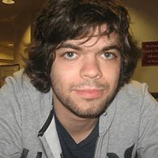
Alex Selesse Co-Chair
Alex is a recent Software Engineering graduate from McGill. Last year, Alex was CUSEC's Director of Sponsorship. Alex likes to read, go rock climbing, play video games, and he loves programming. These days, he's particularly intrigued by the combination of Java, gradle, and IntelliJ IDEA (with IdeaVim!).
-
Matthew Leavitt Co-Chair
Matthew is a PhD student in Neuroscience at McGill. He spends most of his time thinking of witty things to include in blurbs like this, but he occasionally indulges his curiosity by doing things like cooking, or co-chairing software engineering conferences. He is very close to figuring out how the brain works.
-
Alex Coco Co-Director of Logistics
Alex is in his third year of Software Engineering at McGill. In his spare time, he loves to cook, drink coffee, and explore. He loves Ruby, Rails, typography, and Tetris and wants to learn more Go and Node.js.
-
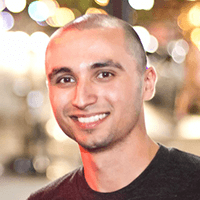
Michael Lakhia Co-Director of Logistics
Michael studies Computer Science at John Abbott College. He works at PasswordBox.com on the Android and JavaScript teams and loves it. This is his first year as the Co-Director of Logistics.
-
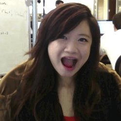
Xenia Tay Webmaster & Designer
Xenia is in third year, majoring in Computer Science and minoring in Fine Arts Studio at the University of Waterloo. She builds websites when she isn't on Youtube watching song covers on loop. She loves exploring cities and is aiming to do all 6 of her co-ops in 6 different cities. This is her second CUSEC and her first time in the Webmaster/Designer role.
-
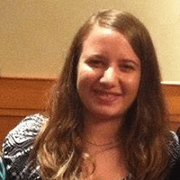
Samira El-Rayyes Director of Sponsorship
Samira was first exposed to the world of code in grade ten, and she is now a third year Software Engineering student at the University of Ottawa. After attending her first CUSEC in 2012, she knew that she had to get involved with this awesome event and has been an organizer since. Last year, she handled CUSEC's social media sites and now Samira is the Director of Sponsorship for CUSEC 2014.
-
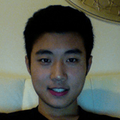
Bowen Xu Sponsorship Team
Bowen is a 3rd year Software Engineering Student at University of Waterloo. He enjoys coding, reading, and going to the gym. This is his second CUSEC and he helps in the Sponsorship team.
-
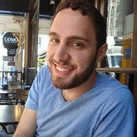
Dominic Charley-Roy Director of Speakers
Dominic is a 2nd year Software Engineering student at McGill University. He fell in love with programming the first time he got 'Hello, World!' to print on his old DOS 386. Nowadays he's mainly playing around with Javascript and Go with a nice cup of tea next to him. This is his second year on the CUSEC team.
-
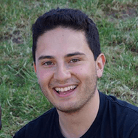
Santiago Gil Director of Promotions
Santiago is currently in his 3B term in Software Engineering at the University of Waterloo. He's attended CUSEC since 1st year and just keeps coming back. He's worked mostly on mobile platforms (iOS, BB10) and a bit of OS X development on his previous co-ops. This year he's acting in the role of Director of Promotions for CUSEC.
-
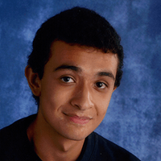
Mohammed Chamma Director of Audio/Visual
Mohammed is a 3rd year Physics-Math student at the University of Ottawa. He programs when physics gets too hard. Right now he's learning about things like Javascript, Go, and Matlab. This is his third CUSEC!
-
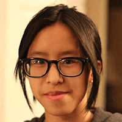
Danielle Pham Audio/Visual Team
Danielle is in her third year of Computer Science and Biology at McGill. She appreciates readable code, particularly Python and Ruby, as well as minimalistic design. Danielle is interested in learning web development, data analytics and visualization.
-
Amy Yang Audio/Visual Team
Amy is in her 3rd year of Dietetics at McGill (so related, eh?). After 2 years of sneaking around with the cool kids at CUSEC, she decided to join the dark side. She's usually the one that people go to for computer help (perks of being a geek). CUSEC is the place where she's probably doing the silliest things. You can always spot her in her bright yellow coat.
-
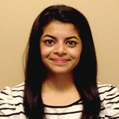
Kruti Bagde Carleton University Head Delegate
Kruti Bagde is the Head Delegate of Carleton University. She is a second year student at Carleton University Ottawa, in Bachelor of Information Technology, Network Technology. Kruti is also trained Indian classical dancer, loves to dance, read books listen to music, play Basketball, badminton, Guitar, watch movies and TV shows. This year would be her third year at CUSEC.
-
Patrick Nguyen Concordia University Head Delegate
Patrick is a 2nd year Software Engineering student at Concordia University. This would be the 3rd CUSEC that he attends and he's looking forward to meeting amazing people and hearing awesome speeches. He enjoys to snowboard and draw in his spare time.
-
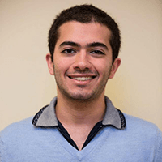
Sami Jaber McGill University Head Delegate
Sami is a 3rd year Computer Science Major at McGill University. Attended the last two CUSEC's, was blown away by the event's calibre, and wanted to help make it even better! A coder currently obsessed with Scala, he uses it on his free time to learn web development.
-
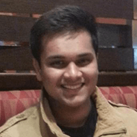
Saif Myageri McMaster University Head Delegate
Saif is a third year Software Engineering student at McMaster University. This is his second CUSEC and the first time as the head delegate. In his spare time he likes to read and aimlessly browse the internet. He's most passionate about soccer and loves to play and watch soccer games.
-
Aimal Khan McMaster University Head Delegate
Aimal is a fourth year Software Engineering student at McMaster University. This will be his fourth consecutive year attending CUSEC, and his second year continuing as a head delegate. He is passionate about web and mobile development, and enjoys creating music in his free time.
-
Jamie Bannerman Queen's University Head Delegate
womp.
-
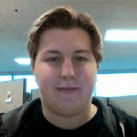
Julian Horvat University of Guelph Head Delegate
Julian is a 3rd year Software Engineering student at the University of Guelph. He has been in love with computers his whole life but didn't start programming till highschool. At school he uses C, and Java but in his spare time is learning Web Development and Go. This is his second CUSEC but the first time being a delegate.
-
Stephanie Zeidan University of Ottawa Head Delegate
Stephanie is a 3rd year student at the University of Ottawa studying Electrical Engineering and Computing technology. This is will be her second year attending CUSEC and her first year as a Head delegate. Currently interested in and learning web development and MATLAB. She hopes to travel the world one day.
-
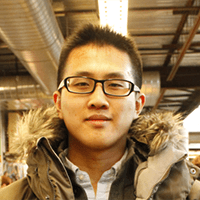
David Kua University of Toronto Head Delegate
David is a third year Computer Science student at the University of Toronto Scarborough. He likes Python, Go, Javascript, and talking about API design. When he is not programming, David can be found dragon boating. This is his first CUSEC.
-
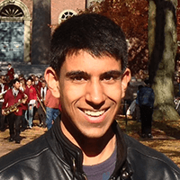
Alykhan Kanji University of Waterloo Head Delegate
Alykhan is a third year Software Engineering student at the University of Waterloo. He has attended CUSEC annually and is a Head Delegate this year. Alykhan is enthusiastic about Open Data and mobile development. He has experience developing mobile apps and websites.
-
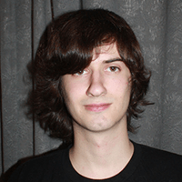
Vaughan Hilts Wilfrid Laurier University Head Delegate
Vaughan is a 2nd year Computer Science student at Wilfrid Laurier University. Interested in programming and game development pre high school - he now works at startup Axonify developing HTML5 games using bleeding edge technology. In his spare time, Vaughan enjoys game theory and development, machine learning and web apps for the mobile space.
-
Nataly Sheinin York University Head Delegate
Nataly is a 3rd year Computer Science student at Lassonde School of Engineering, York University. This is her first year as a delegate for CUSEC. She spends her summers working at TELUS as a co-op developer on the web services team. She has experience using java for the purpose of web development.
-
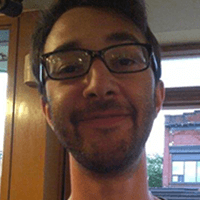
Miguel Ocampo-Gooding York University Head Delegate
Miguel is a second year Digital Media student at York University. This will be his second CUSEC and his first as a Head Delegate. He is currently learning about how to bridge the gap between programming and art.